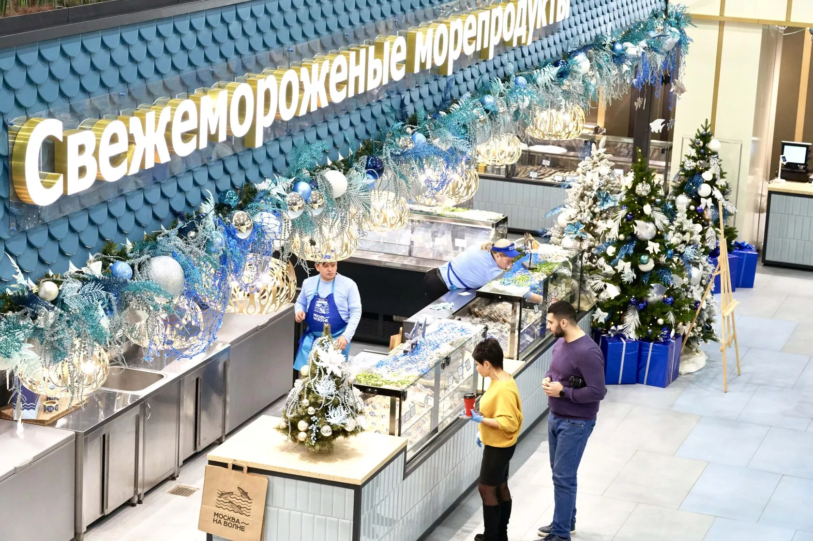
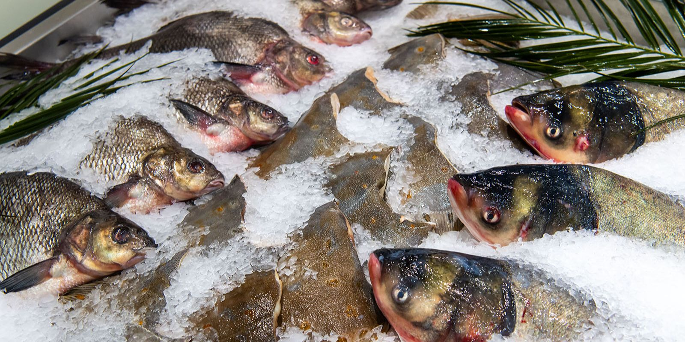

«Москва на волне» — это не рынок в классическом понимании, он расположен на двух этажах торгового центра «Город Косино».

На рынке можно найти разделы «Охлажденная рыба», «Крабы», «Морепродукты», «Морские деликатесы», «Деликатесы из коптильни». Еще продается живая рыба и есть целый раздел с игривым названием «Остров селедочки». Посетители хвалят ассортимент и чистоту на рынке, но отмечают, что вообще-то дорого, рыбу могут приготовить прямо на месте в одном из ресторанов. На втором этаже отвели место под рыбный фудкорт, здесь же собираются проводить мастер-классы и дегустации.
Дополнение за февраль
С момента его открытия было приготовлено пять тонн блюд из рыбы и морепродуктов. За два месяца работы рыбный рынок «Москва — на волне» в районе Косино-Ухтомский посетили более 250 тысяч человек. Объем реализованной развесной продукции составил более 160 тонн, устриц — более 20 тысяч штук. Кроме того, продана 21 тысяча банок икры и почти 44 тысячи банок консервов. Лидерами среди реализованной развесной продукции стали краб-стригун опилио и камчатский краб, осетр горячего копчения, стейк мурманского лосося.
С момента открытия рынка замороженные конечности краба лидируют по объему продаж. Более того, краб — сезонная продукция, его вылов длится несколько месяцев. Специально для рыбного рынка «Москва — на волне» закуплено девять тонн краба (шесть тонн краба-стригуна опилио и три тонны камчатского краба), это последняя партия. Новый улов появится на прилавках только в апреле.